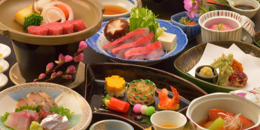
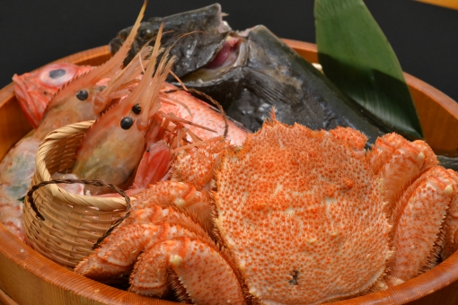
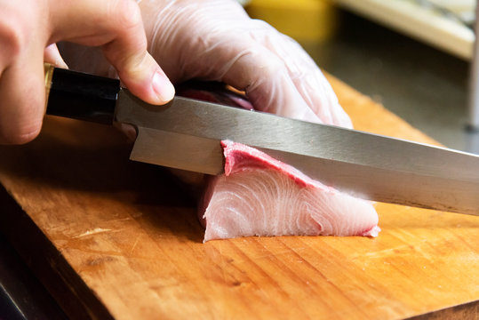

地元熱海の市場で仕入れた食材のみを使った食材をふんだんに使い、
大将の技が光る「熱海料理」
四季ごと、日ごとに変化する味わいを、どうぞご堪能ください。

地元食材にこだわった会席料理
みずみずしくほのかに甘い野菜、新鮮で味に深みがある魚介類。
旬の素材をそのままに生かす、経験に裏打ちされた確かな技。
四季ごと、日ごとに変化する味わいを、どうぞご堪能ください。
熱海の漁港で目利きの品を
石井花壇でお出しする料理はすべて料理長である大将の目利きで、
熱海の魚市場でその日のうちに仕入れたものを使用しております。
日本海の宝玉を十分にお楽しみください。


食材が一流、職人も一流
石井花壇の料理人は料亭で20年経験を積んだものばかり。
その時の最も旬な食材を、最高の調理でお届けします。
また、お料理への細かいご要望にもお答えできますので、
お気軽にお申し付けください。